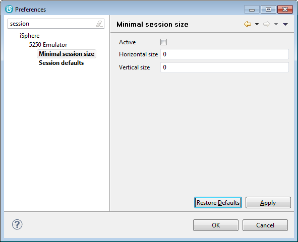

The Key settings page is nothing more than a reminder for the global key mappings of the 5250 emulator.
This page specifies the minimal session size of a 5250 session.

If the size of the session window falls below the specified minimal size, scrollbars appear and you can use the mouse or the keyboard to scroll the window:
| Ctrl-Alt-Up | - | Scroll up |
| Ctrl-Alt-Down | - | Scroll down |
| Ctrl-Alt-Left | - | Scroll left |
| Ctrl-Alt-Right | - | Scroll right |